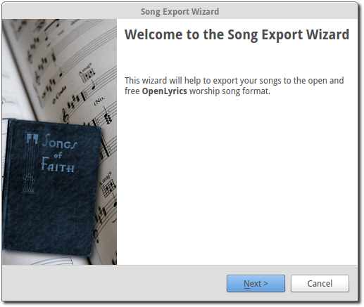
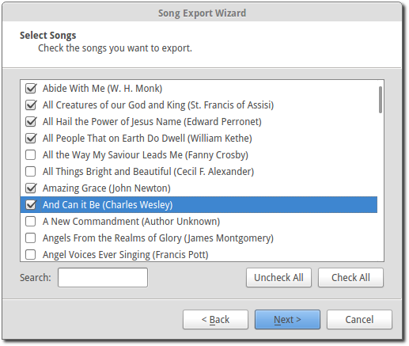
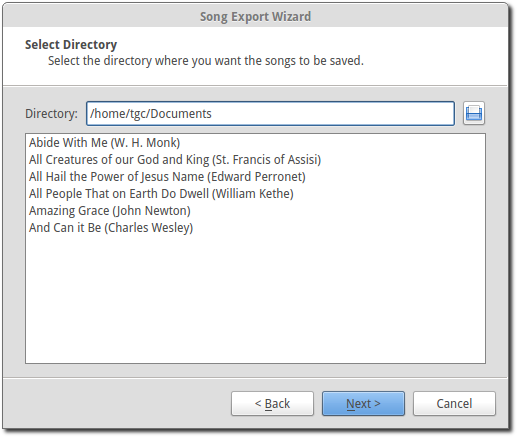
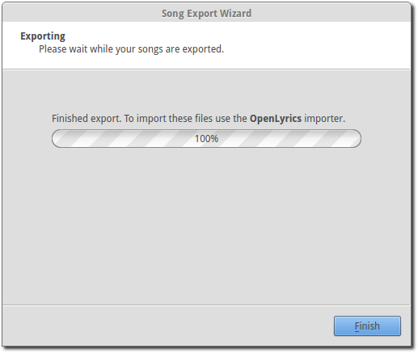

Exporting Songs
OpenLP has the ability to export your songs in the OpenLyrics worship song format. This is convenient for transferring your songs to another computer or for backup purposes.
Song export is accessible through and once clicked the following dialog box will appear.
Click Next to continue or Cancel if you change your mind.
You can select the songs you want to export by clicking on each song you want to export.
- Search:
- Searches for a song title or keyword in a title.
- Uncheck All:
- If you are not sure of your selections click Uncheck All and start over.
- Check All:
- Click Check All selects all of the songs for export.
When you are finished with your selection click Next.
- Select Directory:
- Select the directory where you want the songs to be saved. The list of songs to be exported are shown below.
Note: Exporting songs will create a file for each song, If you export one hundred songs, you will have have one hundred individual files.
Click Finish to complete the export process.